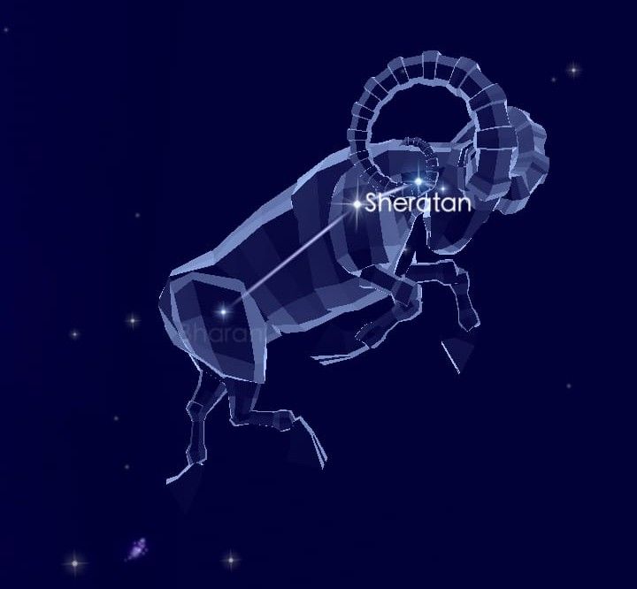
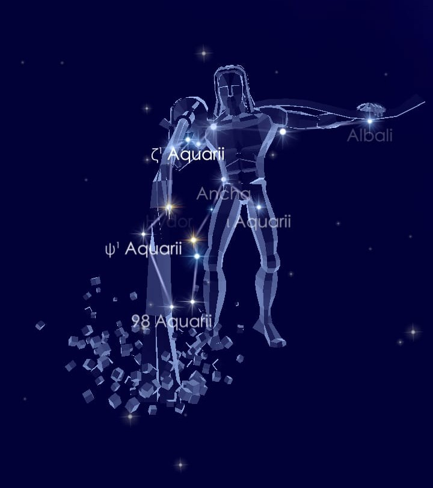
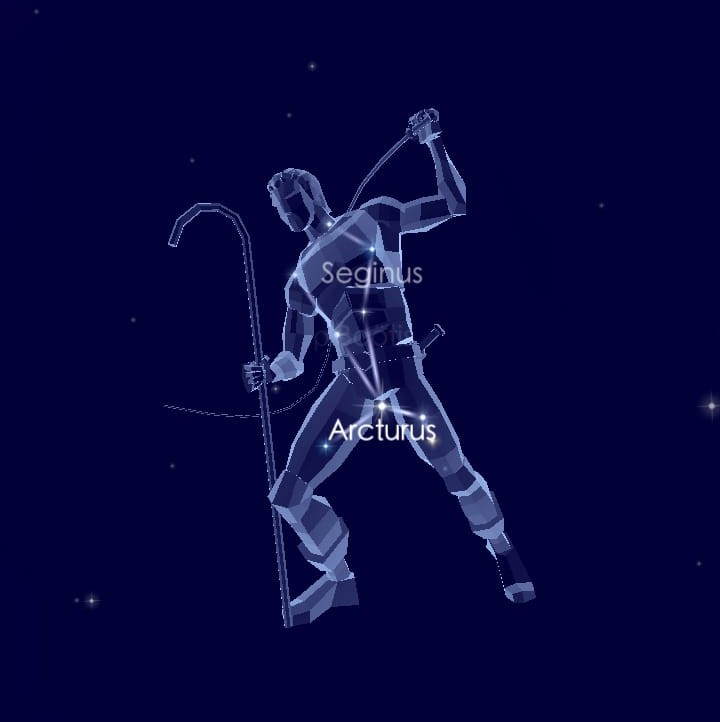
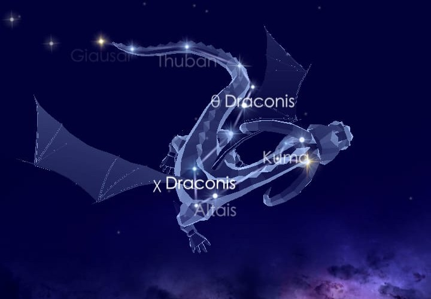
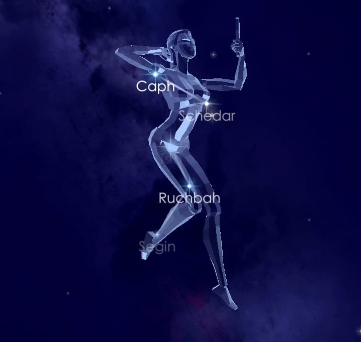
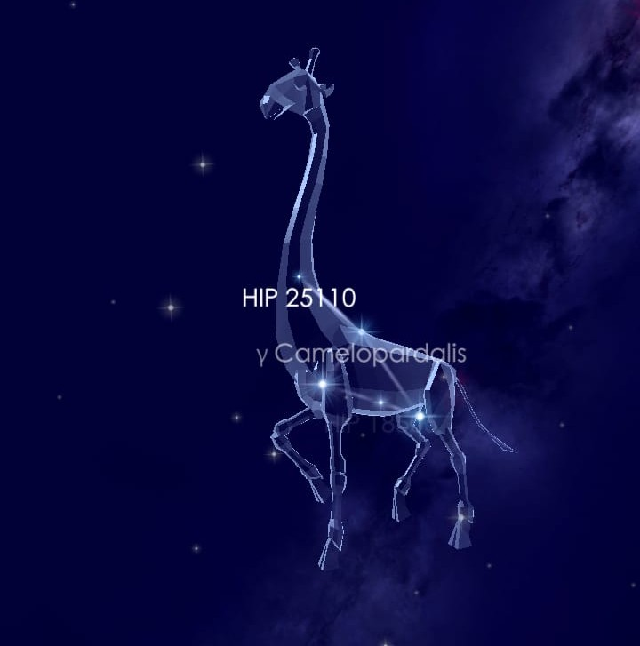
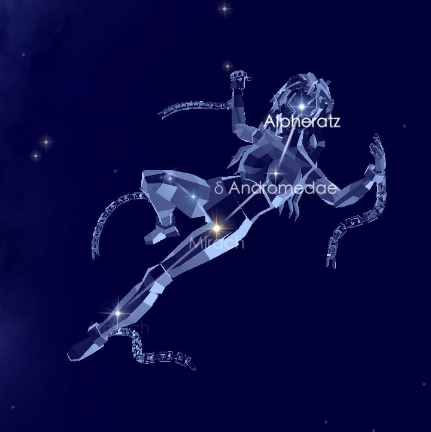
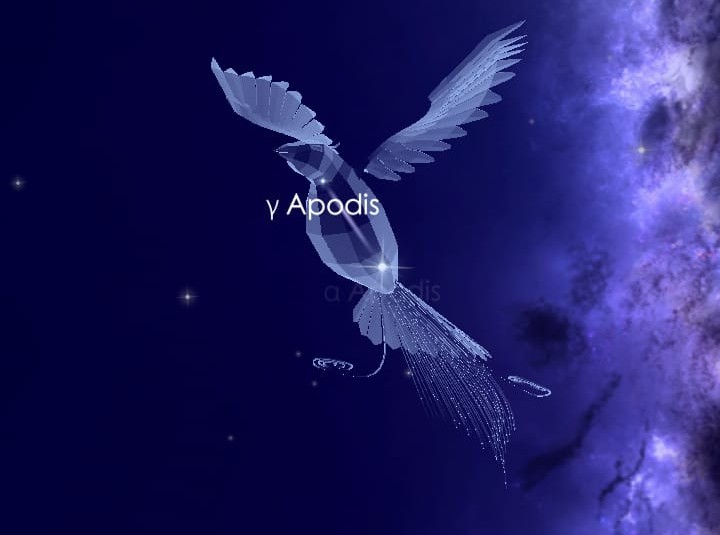

♈ Constellations du Zodiaque
Aries : Le Bélier
- Étoiles principales : Hamal, Sheratan, Mesartim
- Objets remarquables : NGC 772, NGC 1156
- Mythologie : Bélier à la toison d’or
- Meilleure période : Automne

Aquarius : Le Verseau
- Étoiles principales : Sadalmelik, Sadalsuud, Skat
- Objets remarquables : NGC 7293 (nébuleuse de l’Hélice)
- Mythologie : Porteur d’eau grec
- Meilleure période : Automne

♻ Constellations Circumpolaires
Bootes : Le Bouvier
- Étoiles principales : Arcturus, Izar, Muphrid
- Objets remarquables : NGC 5248
- Mythologie : Gardien du chariot céleste
- Meilleure période : Printemps

Draco : Le Dragon
- Étoiles principales : Thuban, Eltanin
- Objets remarquables : NGC 6543 (nébuleuse du Chat)
- Mythologie : Dragon gardien du jardin des Hespérides
- Meilleure période : Printemps

🌌 Constellations du Nord
Cassiopeia : Cassiopée
- Étoiles principales : Schedar, Caph, Tsih
- Objets remarquables : NGC 7789, NGC 457
- Mythologie : Reine vaniteuse, mère d’Andromède
- Meilleure période : Automne

Camelopardalis : La Girafe
- Étoiles principales : Beta Cam, Alpha Cam
- Objets remarquables : Galaxies lointaines NGC 2403
- Mythologie : Constellation moderne du 17e siècle
- Meilleure période : Hiver

Andromeda : Andromède
- Étoiles principales : Alpheratz, Mirach, Almach
- Objets remarquables : M31 (Galaxie d’Andromède), NGC 206
- Mythologie : Fille de Cassiopée et Céphée, enchaînée à un rocher pour être sauvée par Persée
- Meilleure période : Automne

🌌 Constellations du Sud
Apus : L'Oiseau de paradis
- Étoiles principales : Alpha Apodis, Beta Apodis
- Objets remarquables : NGC 6101
- Mythologie : Oiseau de paradis de Nouvelle-Guinée
- Meilleure période : Printemps

Ara : L'Autel
- Étoiles principales : Beta Arae, Zeta Arae
- Objets remarquables : NGC 6193
- Mythologie : L’autel des dieux
- Meilleure période : Printemps
Antlia : La Machine pneumatique
- Étoiles principales : Alpha Antliae, Beta Antliae
- Objets remarquables : NGC 2997
- Mythologie : Constellation moderne du 18ᵉ siècle
- Meilleure période : Printemps